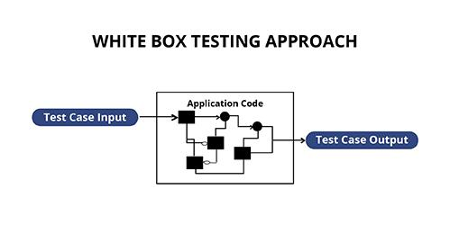

Function, statement and branch coverage · Bugs that hide behind green coverage · What coverage does and does not prove
→ next slide | ESC overview
1. Black box vs white box, revisited
2. Code coverage: function, statement, branch
3. Reading code as a graph
4. Worked examples — bugs hiding behind green coverage
5. Going further: compound conditions, paths, complexity
6. Live demo: a coverage report in Jest
7. Why 100% coverage does not mean 100% tested

Both numbers can be high while the product is still broken — and one being high tells you nothing about the other.
Each level is stricter than the one before it. 100% branch coverage implies 100% statement coverage; the reverse is not true.
Requirement: members get 10% off. Non-members pay the full price.
function finalPrice(price, isMember) {
let discount;
if (isMember) {
discount = 0.1;
}
return price - price * discount;
}function calc(a, b) {
let c = 0;
if (a > b) {
c = a;
}
return c;
}Note that calc(1, 1) gives 100% function coverage while never executing the body of the if. This is why the metric you quote matters.
function loop(a) {
let c = 0;
for (let i = 0; i < a; i++) {
c = c + 1;
}
return c;
}The finalPrice function from the graph, with one test:
test('member gets 10% off', () => {
expect(finalPrice(100, true)).toBe(90);
});let discount ✓if (isMember) ✓discount = 0.1 ✓return … ✓isMember? was never walked. Branch coverage forces a second test: finalPrice(100, false), expected 100.discount stays undefined. The bug lives on the arrow you can't see in the code — the missing else.Show the average star rating. A product with no ratings shows 0.
function averageRating(ratings) {
let sum = 0;
for (const r of ratings) {
sum += r;
}
return sum / ratings.length;
}| Iterations | Input | Expected | Actual | Result |
|---|---|---|---|---|
| 1 | [3] | 3 | 3 | PASS |
| many | [4, 5, 3] | 4 | 4 | PASS |
| 0 | [ ] | 0 | NaN (0 ÷ 0) | FAIL |
Standard delivery 5 €. Orders of 50 € or more get free standard delivery. Express delivery always costs 12 €.
function deliveryFee(total, isExpress) {
let fee = 5;
if (isExpress) {
fee = 12;
}
if (total >= 50) {
fee = 0;
}
return fee;
}Two decisions in a row → 2 × 2 = 4 paths through the graph. Branch coverage only needs 2 of them.
| Path | Input | isExpress | total ≥ 50 | Expected | Actual | Result |
|---|---|---|---|---|---|---|
| A | (20, true) | T | F | 12 | 12 | PASS |
| B | (60, false) | F | T | 0 | 0 | PASS |
| C | (20, false) | F | F | 5 | 5 | PASS |
| D | (60, true) | T | T | 12 | 0 | FAIL |
if was TRUE once and FALSE once. The coverage report is fully green.if overwrites the first. Bugs love the combination of decisions — that's what path coverage targets.Requirement: you can rent a car if you are at least 21 and have a licence. The developer typed || instead of &&:
if (age >= 21 || hasLicense) { // should be &&
return true;
}
return false;| Test | Expected (&&) | Actual (||) | Branch-coverage tests | Each-condition tests |
|---|---|---|---|---|
| (25, true) | true | true | PASS | PASS |
| (18, false) | false | false | PASS | — |
| (18, true) | false | true | — | FAIL |
| (25, false) | false | true | — | FAIL |
Two tests give 100% statement and branch coverage — and miss the bug. Fix: show that each condition on its own can flip the result. This is called MC/DC and is required for flight-critical aviation software.
ifs → 4 pathsifs → 1 024 pathsif, loop, case, &&, ||, ?:.| Function | Decisions | M | All paths |
|---|---|---|---|
| finalPrice | 1 if | 2 | 2 |
| canRent | 1 if + 1 && | 3 | 3 |
| deliveryFee | 2 if | 3 | 4 |
M above ~10 means the function is hard to test — refactor it. Static analysis (Lesson 6) can enforce this: ESLint "complexity": ["warn", 10].
Open coverage/index.html — yellow and red mark code no test ever executed.
01-finalPrice — the missing else is highlighted.Recommendation: black box + white box together give higher test coverage and higher code coverage. Neither replaces the other.
2 € per hour; 0 hours costs nothing. Residents who park more than 3 hours get 50% off.
function parkingFee(hours, isResident) {
if (hours <= 0) {
return 0;
}
let fee = hours * 2;
if (isResident && hours > 3) {
fee = fee / 2;
}
return fee;
}hours > 3 matters on its own?| Question | Answer | Tests |
|---|---|---|
| 100% statement | 2 tests (Jest: 100% statements, 83% branches) | (0, false) → 0 · (5, true) → 5 |
| 100% branch | 3 tests — add the FALSE outcome of the second if | + (5, false) → 10 |
| Black box: BVA | "more than 3" — test the boundary | + (3, true) → 6 |
| Cyclomatic complexity | 2 if + 1 && + 1 = 4 | — |
| hours > 3 on its own | Resident, short stay — only hours changed vs (5, true) | + (2, true) → 4 |
After 3 tests Jest already shows 100% branches — it cannot see the boundary or the single-condition case. The tool measures; you design.
Given test cases:
Questions:
Draw the flow diagram if it helps. Code: onecompiler.com/javascript/3yydc2m52
Submit your statement and branch coverage analysis for the boarding pass code, the additional tests needed for 100% statement coverage, and a diagram if you drew one.
Full brief: Homework 7